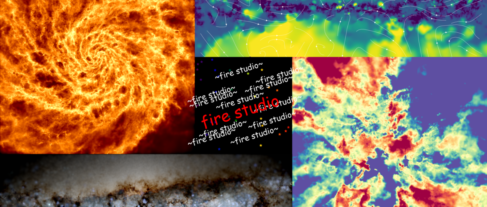

The importance of compelling scientific visualization
The importance of compelling visualizations in scientific publications cannot be overstated. It may not seem obvious at first if you're used to thinking of scientists as machines but they're people too! In a world overflowing with publications, each is a sales pitch and capturing the attention of your readers is essential if you're going to break through the noise. Effective visuals can make a result stand out and leave a longer lasting impression that's more likely to be remembered.
Of course, that's all aside from the fact that a good, informative, visualization aids in comprehension and facilitates pattern recognition. Clear and engaging visuals help to break down an idea and present information in an easy to understand way. They also play a crucial role in disseminating scientific knowledge to the broader public fostering a better understanding of research and its implications and impact.
As a result, the tools that enable the creation of high-quality visualizations are essential for the advancement of science and the effective communication of research findings to experts and thus deserve attention in their own rite.
Why make a tool for visualizing galaxy formation simulation data in particular?
In my biased opinion, galaxy simulations are some of the coolest scientific visualizations out there. There's literally nothing in existence bigger than the universe and so to watch an animation of it evolving kind of breaks your brain (in a good way). I think all of us who have contributed to galaxy formation research have at some point been mesmerized, staring at the evolution of a simulation.
But making those animations is really difficult. Rendering even a single publication-quality frame can be a herculean task that for many budding scientists seems insurmountable. FIRE Studio was inspired by a student I worked with who, as part of their summer research program, had to put together a poster for a final presentation. They didn't know how to make an image of the simulation they'd been studying so they took a screenshot of figure from a paper and put it on their poster. I thought to myself, this isn't right-- he's been looking at this data for months and hasn't ever really seen it. I believed that the power to visualize images should belong to everyone. So, I set out to write a convenient and sensible API for making publication quality images.
Thus, FIRE Studio was born. FIRE Studio aims to simplify this task by providing researchers with an easy to use tool designed specifically for crafting high-quality visuals of their simulations. It's named as such because I love Hollywood movies and I wanted users to feel like they were in the editing booth turning knobs to make the most fantastic version of their figure/movie that they could. There are moving cameras, "studios" (different types of visualizations), "productions" (pre-built visualization scripts that people can riff off of), and time interpolation utilities for making high framerate movies. All of this with a convenient to use Python API that wraps a custom built parallel renderer written in C.
FIRE Studio simplifies the process of creating high-quality scientific visualizations, allowing researchers to focus on their work rather than struggling with, or writing their own, unwieldly software.
The different visualization modes of FIRE Studio
FIRE Studio has a couple of different "modes" (a.k.a. studios): a. Column density projections: Display the distribution of mass in a given area. b. Two-color projections: Visualize two different data properties simultaneously, such as temperature (hue) and density (brightness). c. Three-color projections: Separate data into three different temperature bins, project the column density in each bin, then assign them red, green, and blue color values for a comprehensive view. d. Mock Hubble luminosity and dust attenuation maps: Create realistic, Hubble-like images by accounting for starlight and dust effects.
Each of these modes shares a common underlying API for setting up the image. That way, you can find a camera angle that you like and easily apply it to totally different rendering pipelines to make an easy comparison. Additionally, each FIRE Studio image is plotted on a matplotlib axis object which is returned to the user, so you can easily compose them in subplots or plot contours or annotations on top of them.
Making movies
Animated visualizations, or "movies," produced by FIRE Studio offer a range of additional benefits compared to their static counterparts. One of the primary advantages is that these dynamic visuals showcase changes over time, allowing researchers to gain a deeper understanding of the evolution of various galactic processes. This temporal aspect is particularly important in the study of phenomena that span vast time scales, such as the life cycle of stars or the movement of gas within galaxies. Animated visualizations allow researchers to identify patterns or trends that may be less evident in static visualizations, leading to new discoveries and insights. Another advantage of animated visualizations lies in their ability to convey the interconnectedness of various processes within a system. By illustrating how different components of a system interact and influence one another over time, these dynamic visuals can provide a more holistic understanding of the subject matter, which may be difficult to achieve using static images alone.
Furthermore, animated visualizations can be more engaging for audiences, capturing their attention and fostering a greater appreciation for the research presented. This increased engagement can be particularly beneficial when communicating scientific findings to the broader public, as it helps make complex concepts more accessible and relatable.
FIRE Studio uses a unique slope-limiting scheme to minimize artifacts when creating high framerate movies, ensuring smooth and accurate visualizations. The simulation output is already massive, a single simulation on disk may take up to 5 TB of space. That space is made up of 100s of snapshots in time of the galaxy separated by tens of millions of years. A lot can happen in tens of millions of years! If we made a flipbook it would look very jumpy, especially near the center of the galaxy.
To solve this, we have to interpolate between the different frames. There are a couple of ways to do this, but the one that I've found works best is to take the particles in the simulation and split them into two groups:
- those that won't complete a significant fraction of their orbit between frames
- those that are orbiting quickkly enough to complete a significant fraction of their orbit between frames
It's fairly easy to determine this by comparing the velocity of the orbit its on and comparing the amount of time between snapshots.
For the first group, there is a simple solution to interpolation: linearly interpolate along a straight line between points A and B as defined by the snapshots you have. The path the particle takes between A and B can be determined pretty well. The second group is a bit more complicated.
For the second group, we have to guess the path between points A and B that the particle most likely took through the simulation. We can model this path using the angular momentum of the particle, which defines a circular arc that it moves along. Then we can use different orders of interpolation (a straight line, a parabola, or a cubic) to determine how it moved along that path. The higher the order of interpolation, the more accurately you are able to match properties of the particles at both points A and B. However, higher order interpolation can introduce artifacts. Thus, we check if there is a change in slope along the path that would suggest an extremum was encountered (PUT A FIGURE HERE FOR THIS). If that's the case, then we go down an order until we stop at a straight line which is impossible to have an extremum. This slope limiter allows us to have the best of both worlds: accurate high order interpolation when we can manage it and no interpolation artifacts.


If you're looking to simplify your data visualization process and bring your galactic simulations to life, consider giving FIRE Studio a try. More information, tutorials, and the code itself can be found on it's homepage.